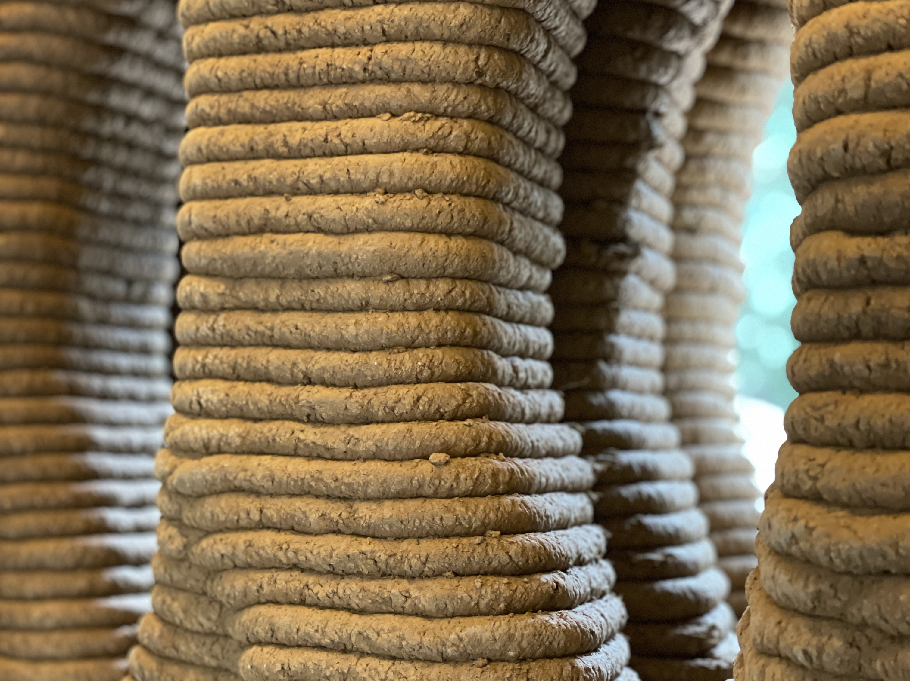

3D printing was this week's new adquired knowledge. The first ever printer invented was in 1983, so this technology has been around us for more than we think and it keeps evolving. The thing with 3D printing is that sometimes the advances are very expensive and are not ready to see the light yet. We are now able to 3D print a whole variety of materials and scales, from 3D printed houses to 3D printing glass. A big part of 3D printing is creating the proper 3D model and instructions to communicate with the machine. Now with the explorations of new modeling techniques and printing we are able to expand the range of shapes and forms we can print.

For this task I wanted to develop further my project and try to create an object with the mussel and oyster shells we used for the intervention on bioremediation.
First we prepared the file for printing. We decided to create a simple shape in order to test the resistance and consistency of the material as a first approach. We downloaded the base file provided by FabLab to use in Rhino Grasshopper for the Ender 3. We had to download also Pufferfish for Rhino in order to open the file on grasshopper. After we opened the file, we were prompted with some parameters to set in order to obtain the desired shape and output for the code.
This was the first shape obtained with the parameters already established. We then exported the code by copying the data only and into a note, then into a usb to set it up in the machine.
We then started preparing the paste made out of the oyster shells. We followed a recipe found on Materiom of oyster shell printing. We first had to boil and clean the oysters and mussels we used in the previous intervention to bioremediate the water. After we dried them in the oven so they could become more brittle. We then started breaking them down into smaller pieces before putting them inside the shredder. The dust was everywhere but we managed to get quite a lot. The dust still had some larger pieces so we sifted it before measuring how much we would use. The recipe we were following stated that we needed to use a ratio of 1:0.4, 1 being the amount of oyster powder and .04 being the binder. So we used the following.
When we mixed everything we realized the paste was very thick and grainy and it wouldn't flow easily down the nozzle so we had to add more water. We started adding 10gr then 10gr again and so on until the paste would flow easily down the nozzle. We tried first with a different nozzle than the one we wanted to print with because it was better to test it on another one. But then we realized that the opening was way more narrow than the one we would use and that in the other one the material would already be flowing. When we realized this we had already added a bit more water than needed. So the actual recipe we did was this:
We went to the computer when we had the paste ready and started setting up the file and printer. We tested first with Ender printer which is higher risk but more definition. We had to adjust the parameters of the Z axis (0) for the nozzle, the width of the nozzle opening (3) and the slicing distance (2.5) and for the infill we left (2.5). We made some tests to see how the paste came out.

The paste took a while to come down because of the density and because we had to figure out better the pressure of the air. The pressure of the air is something that needs constant attention in order to obtain a better printing. The first one went smoothly but we felt like the space in between layers was a bit low so the nozzle was too close to the printing. We stopped and decided to change machines. We went and used to Kossel for the 2nd test. We had to download the other template file of Kossel for Grasshopper. We also downloaded Repetier in order to ease the process of communicating with the machine. We set up the change in parameters like the Z axis which was calculated manually and was set at G1 Z-19 F5000. G1 stands for movement, Z represents the axis and then -19 is the value and F5000 represents the speed at which the nozzle will move.

As you can see, the nozzle was not touching the plate so we had to try different values of Z until we got the right one which was -19. With this printer we got more width in the nozzle opening and less quality but less risk. We exported the new code and shape and started the print. This new test was more wobbly due to the thickness of the printed material and liquidity. The shape was starting to feel like it would collapse so we stopped the printing and after some minutes it fell down. We decided to repair it by hand and created a tray instead of a vase.
We also had some spare bigger shells which we decided to use to decorate the piece.
THIS IS THE PROCESS WE FOLLOWED STEP BY STEP.

In the end we got these two unique 3d printed vases out of oyster shells which we couldn't be happier about but also now that we've learned of our mistakes and failures we would love to improve our process and outcome.

I also got to visit the OTF final project in Valldaura which was a 3D printed house with soil from the area. I have to say that by having done it before at a smaller scale made me understand better the structure and process of it. They had some issues with the drying of the mix and inside walls which caused one of the walls to collapse which made me think of our collapsed vase. 3D printing is very tricky but as time passes and you experiment more with it the you can come up with more complex projects and ideas.
